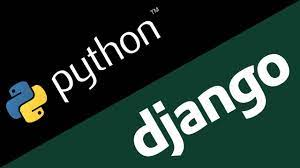

Welcome to Django

Django (укр. Джанго) — високорівневий відкритий Python-фреймворк (програмний каркас) для розробки вебсистем. Названо його було на честь джазмена Джанго Рейнхардта (відповідно до музичних смаків одного зі засновників проєкту).
Сайт на Django будується з однієї або декількох частин, які рекомендується робити модульними. Це одна з істотних архітектурних відмінностей цього фреймворку від деяких інших (наприклад Ruby on Rails).
Архітектура Django подібна на «Модель-Вигляд-Контролер» (MVC) . Однак, те що називається «контролером» в класичній моделі MVC, в Django називається «вигляд» (англ. view), а те, що мало б бути «виглядом», називається «шаблон» (англ. template). Таким чином, MVC розробники Django називають MTV («Модель-Шаблон-Вигляд»).
Опис та функції компонентів
У рамках архітектурного шаблону модель–вигляд–контролер (MVC) програма поділяється на три окремі, але взаємопов'язані частини з розподілом функцій між компонентами. Модель (Model) відповідає за зберігання даних та їх структуру. Вигляд (View) відповідальний за представлення цих даних користувачеві, тобто інтерфейс програми. Контролер (Controller) керує компонентами, отримує сигнали у вигляді реакції на дії користувача (зміна положення курсора миші, натискання кнопки, ввід даних в текстове поле) і передає дані у модель.
Модель є центральним компонентом шаблону MVC і відображає поведінку застосунку, незалежну від інтерфейсу користувача. Модель стосується прямого керування даними, логікою та правилами застосунку.
Активна модель - вигляд відстежує зміни в моделі та реагує на них.
Пасивна модель- вигляд оновлюється через контролер.
Вигляд може являти собою будь-яке представлення інформації, одержуване на виході, наприклад графік чи діаграму. Одночасно можуть співіснувати кілька виглядів (представлень) однієї і тієї ж інформації, наприклад гістограма для керівництва компанії й таблиці для бухгалтерії.
Контролер одержує вхідні дані й перетворює їх на команди для моделі чи вигляду.
Модель інкапсулює ядро даних і основний функціонал їхньої обробки і не залежить від процесу вводу чи виводу даних.
Вигляд може мати декілька взаємопов'язаних областей, наприклад різні таблиці і поля форм, в яких відображаються дані.
У функції контролера входить відстеження визначених подій, що виникають в результаті дій користувача. Контролер дозволяє структурувати код шляхом групування пов'язаних дій в окремий клас. Наприклад у типовому MVC-проєкті може бути користувацький контролер, що містить групу методів, пов'язаних з управлінням обліковим записом користувача, таких як реєстрація, авторизація, редагування профілю та зміна пароля.
Зареєстровані події транслюються в різні запити, що спрямовуються компонентам моделі або об'єктам, відповідальним за відображення даних. Відокремлення моделі від вигляду даних дозволяє незалежно використовувати різні компоненти для відображення інформації. Таким чином, якщо користувач через контролер внесе зміни до моделі даних, то інформація, подана одним або декількома візуальними компонентами, буде автоматично відкоригована відповідно до змін, що відбулися.
Django documentation
Everything you need to know about Django.
First steps¶
Are you new to Django or to programming? This is the place to start!
From scratch: Overview | Installation
Tutorial: Part 1: Requests and responses | Part 2: Models and the admin site | Part 3: Views and templates | Part 4: Forms and generic views | Part 5: Testing | Part 6: Static files | Part 7: Customizing the admin site | Part 8: Adding third-party packages
Advanced Tutorials: How to write reusable apps | Writing your first patch for Django
Getting help¶
Having trouble? We’d like to help!
- Try the FAQ – it’s got answers to many common questions.
- Looking for specific information? Try the Index, Module Index or the detailed table of contents.
Not found anything?
See FAQ: Getting Help for information on getting support and asking questions to the community.- Report bugs with Django in our ticket tracker.
The model layer¶
Django provides an abstraction layer (the “models”) for structuring and manipulating the data of your web application. Learn more about it below:
Models: - Introduction to models
- Field types
- Indexes
- Meta options
- Model class
QuerySets: - Making queries
- QuerySet method reference
- Lookup expressions
Model instances: - Instance methods
- Accessing related objects
Migrations: - Introduction to Migrations
- Operations reference
- SchemaEditor
- Writing migrations
Advanced: - Managers
- Raw SQL
- Transactions
- Aggregation
- Search
- Custom fields
- Multiple databases
- Custom lookups
- Query Expressions
- Conditional Expressions
- Database Functions
Other:- Supported databases
- Legacy databases
- Providing initial data
- Optimize database access
- PostgreSQL specific features
Choose the best framework for you
Статтю написав: Sviat.
Відвідайте наш сайт: Logos Academy
вулиця Івана Франка, 61
Львів, Україна
Підпишись на наш блог!
My favorite language is Java Python!
Сподіваємося ця стаття була корисною для вас!!!